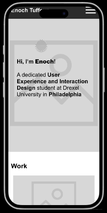

With HTML and CSS
Timeline
Sept 2024 - Dec 2024 (Work in progress)
Solo student Project
A design portfolio mobile screen website showcasing design projects, skills, and personality for employers and recruiters
As a design student, it becomes difficult to assemble a portfolio the way you want without subscription-based services. I wanted to create a portfolio website with my knowledge of HTML and CSS in a way that highlights my style and UX skills.
created a GitHub repository where I pushed all my periodic updates of the code I wrote. Also for inspiration, I analyzed other UX designer portfolios, noting common layouts, styles, and all the possible things I could add to the project.
Using Figma, I created a wireframe with a focus on easy navigation and easy site mapping design for small screen. I incorporated clear typography and accessible color schemes, prioritizing readability and ease of interaction
published the site using Netlify from my GitHub repository. Even though the final portfolio design is not complete yet, it has received positive feedback for its professionalism and easygoing it is.